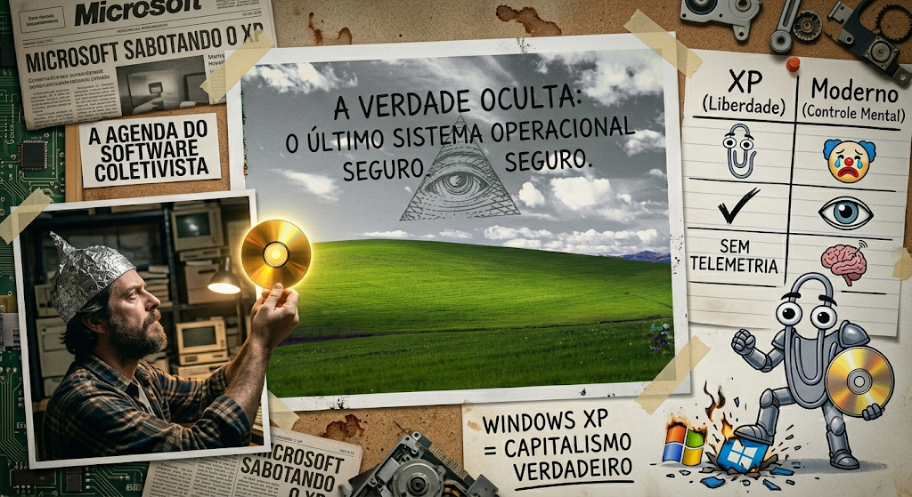

Como instalar o Windows XP em pleno 2026?
Para os membros que acompanham o fórum há anos, o cenário atual não é surpresa. A transição não foi apenas mercadológica; foi estrutural. A união entre as gigantes de hardware e a Microsoft resultou em um ecossistema projetado para tornar a computação offline e anônima impossível. Eles não precisam "proibir" o Windows XP por lei se puderem torná-lo incompatível através de bloqueios de silício e firmware.
Recursos como Secure Boot, a remoção do suporte Legacy/CSM nas placas-mãe e a obrigatoriedade do TPM 2.0 são peças de uma arquitetura de controle. Eles chamam de "segurança moderna". Nós sabemos que é a garantia de que seu hardware só rodará sistemas operacionais que reportam dados de telemetria aos servidores deles.
Se você decidiu que a sua privacidade e a posse real dos seus dados valem o esforço, aqui está o guia técnico e sério de como contornar o bloqueio corporativo e instalar o Windows XP hoje.
FASE 1: PREPARAÇÃO E SUPERAÇÃO TÉCNICA
A maior barreira hoje é a arquitetura de armazenamento. O Windows XP foi criado para se comunicar com discos via padrão IDE, mas as máquinas modernas usam AHCI ou NVMe. Para o sistema enxergar o seu disco, precisamos injetar os drivers antes mesmo da instalação começar.
- A Mídia Limpa: Obtenha uma ISO original (MSDN) do Windows XP SP3. Não confie em versões modificadas por terceiros encontradas em torrents obscuros.
- O "Slipstream" (nLite): Use um computador secundário e o software nLite para modificar a ISO do XP. Você precisará integrar os drivers SATA/AHCI específicos do chipset da sua placa-mãe diretamente na imagem de instalação.
- A Quebra do Padrão GPT: O Windows XP não compreende tabelas de partição GPT (o padrão forçado pelas placas UEFI). Você precisará usar um software de gerenciamento de disco em um pendrive bootável (como o Rufus ou GParted) para converter seu SSD ou HD de GPT para MBR (Master Boot Record).
FASE 2: DESARMANDO A PLACA-MÃE (BIOS/UEFI)
Esta é a linha de frente. Você precisa desativar as travas que a fabricante instalou para impedir que sistemas não-assinados digitalmente pela corporação assumam o controle.
- Acesse a BIOS da sua máquina (pressionando F2 ou DEL durante o boot).
- Desative o Secure Boot (Boot Seguro): Esta é a chave-mestra. Sem desativar isso, a placa-mãe recusará a assinatura do XP.
- Ative o CSM (Compatibility Support Module) / Legacy Mode: Placas-mãe fabricadas a partir de 2020 começaram a remover essa opção. Se a sua não possui CSM, você precisará de um hardware ligeiramente mais antigo. O CSM emula a BIOS tradicional, permitindo que sistemas autônomos deem o boot.
- Modo SATA: Se o "Slipstream" com o nLite não funcionou, procure a configuração SATA e mude de AHCI para IDE ou Legacy.
FASE 3: A INSTALAÇÃO PURA
Dê o boot pela mídia gravada. Se você configurou a UEFI corretamente e injetou os drivers, a tela azul de instalação clássica reconhecerá seu disco rígido.
- Extermínio de Partições: Delete todas as partições existentes no disco. As partições de sistema EFI criadas por versões modernas do Windows não podem coexistir com o XP.
- Formatação NTFS: Realize a formatação completa em NTFS para garantir a integridade do disco e eliminar qualquer vestígio de sistemas anteriores.
- Mantenha a máquina estritamente desconectada de qualquer cabo de rede durante todo o processo.
FASE 4: O "AIR-GAP" (ISOLAMENTO TÁTICO)
Um sistema soberano só permanece livre se for mantido em um ambiente fechado.
- Não instale drivers de rede modernas (Wi-Fi/Ethernet). Somente os nossos O Windows XP não foi projetado para suportar o tráfego hostil e a vigilância da internet de hoje.
- Transferência de Dados Segura: (OPCIONAL) Use a máquina como uma estação de trabalho isolada (air-gapped). Todo trânsito de arquivos (documentos de texto, planilhas, mídia) deve ser feito exclusivamente via pendrives escaneados previamente em uma máquina intermediária segura.
- Aproveite o Silêncio: Você notará que o disco rígido e o processador ficam em repouso absoluto quando você não está fazendo nada. Não há indexação em segundo plano, não há envio de pacotes de dados, não há IA lendo seus padrões de uso.
Você retomou o controle do seu hardware.
